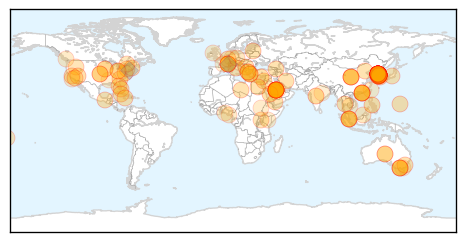
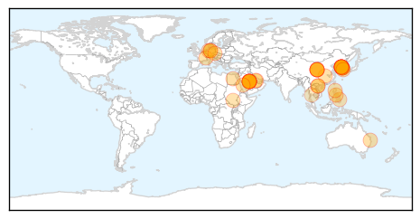

Unknown
30-Day Web Trend
11 alerts, 3 warnings

30-Day Twitter Trend
7 alerts, 1 warnings

Article Locations

Article Confidences

Top Articles:
- 0.999
- South Korea quarantines 2,300-plus people, closes 1,800 schools as deadly MERS epidemic spreads
- 0.999
- Nation aims to stem MERS by end-June
- 0.999
- Mers virus claims first victim in Europe as death toll rises in South Korea
- 0.999
- MERS a 'wake-up call' says WHO as S. Korea reports 20th death
- 0.999
- MERS a 'wake-up call' says WHO as S. Korea reports 20th death
- 0.999
- WHO says MERS a 'wake-up call' as S. Korea reports 20th death
- 0.999
- WHO:Â South Korean MERSÂ outbreak is "wakeup call" for other countries
- 0.998
- South Korean MERS Outbreak a ‘Wake-up Call’
- 0.998
- Israel girds for possible MERS virus outbreak
- 0.998
- WHO says MERS a 'wake-up call' as South Korea reports 20th death
- 0.998
- The World On Arirang
- 0.997
- South Korea reports 20th MERS death - Regional
- 0.997
- South Korea MERS Outbreak 2015 Death Toll Update
- 0.997
- Over 6,500 quarantined for possible MERS
- 0.997
- Hospitals to open examination rooms for MERS suspects
- 0.996
- (MERS virus) Czech patient tested negative
- 0.996
- MERS Virus Continues to Take Victims in South Korea as Cases Surface in Europe
- 0.996
- South Korea reports 20th MERS death
- 0.996
- The World On Arirang
- 0.995
- MERS under control in South Korea
- 0.995
- Doubts grow over containment plans
- 0.995
- DOH asks private hospitals to sustain measures to keep country free of deadly virus
- 0.995
- Europe on alarm after first MERS death in Germany
- 0.995
- Concerns surround 2-week MERS latency period-INSIDE Korea JoongAng Daily
- 0.994
- South Korea reports 20th MERS death
- 0.993
- Tests rule out MERS in Czech patient
- 0.993
- South Korea reports 20th MERS death
- 0.993
- South Korea reports 20th MERS death
- 0.992
- Over 10,000 quarantined already in S. Korean MERS outbreak – The Korea Times
- 0.992
- WHO says MERS a ‘wake-up call’ as SK reports 20th death
- 0.992
- Germany Reports First Death from MERS
- 0.991
- South Korea reports 20th MERS death
- 0.991
- South Korean Hospital Scrutinized in MERS Outbreak
- 0.991
- South Korea Reports 20th MERS Death
- 0.991
- (LEAD) Park urges transparent release of MERS information
- 0.990
- No need for travel bans due to MERS: World Health Org.
- 0.987
- WHO plays down MERS outbreak in South Korea
- 0.987
- Suvarnabhumi gears up for MERS
- 0.987
- Update on latest MERS situation overseas
- 0.986
- South Korea reports 20th MERS death
- 0.985
- South Korea reports three more MERS deaths
- 0.984
- Medical Staff in Korea Fight against Discrimination While Treating MERS Patients
- 0.983
- 8 new MERS cases, total patients 162
- 0.983
- Park meets MERS task force officials
- 0.982
- Over 6,500 in isolation for MERS
- 0.982
- South Korean schools reopen despite widespread MERS fear
- 0.979
- Park meets MERS task force officials
- 0.977
- 12 MERS cases reported
- 0.977
- Deadly superbug CRE, kills two in Melbourne, spreads across Victoria, infecting 60
- 0.966
- Germany reports first death from MERS virus
Showing top 50 articles...
Top Tweets:
- 0.652
- The Intl Health Regulations Emergency Committee on MERS: conditions for a Public Health Emergency of Intl Concern have not been met
- 0.643
- RT: 6508 people have been quarantined so far due to MERS in S.Korea. A rapid increase from yesterday(922 more)
MERS
30-Day Web Trend
27 alerts, 1 warnings

30-Day Twitter Trend
17 alerts, 0 warnings

Article Locations

Article Confidences

Top Articles:
- 1.000
- General Studies (GS) Preparation on IAS, CDS, NDA, Engineering Services & other Entrance Exams at Prepsure.com
- 0.999
- MERS-CoV FAQs
- 0.999
- Vietnam’s health ministry sets up hotline, runs training courses to cope with MERS
- 0.999
- MERS outbreak in Republic of Korea is ‘wake-up call’ for highly mobile world – UN health agency
- 0.999
- trivalleycentral.com: Health And Wellness
- 0.999
- 65-Year-Old Man In Germany Dies From MERS: Europe On Alert : LIFE : Tech Times
- 0.999
- MERS coronavirus a bigger threat to Australasia than Ebola, experts say
- 0.999
- South Korea Mers death toll hits 20 amid alarm over new infections detected outside quarantine
- 0.999
- DOH to private hospitals: Stop MERS, take patients’ history
- 0.999
- WHO panel rules no MERS emergency as Korea notes more cases
- 0.999
- MERS Death Toll in S. Korea Reaches 20
- 0.999
- WHO reaffirms MERS no sustained human-to-human transmission - Xinhua
- 0.999
- Middle East respiratory syndrome
- 0.999
- (3rd LD) S. Korea reports additional death from MERS, 8 new cases
- 0.998
- MERS virus is not a global emergency, says WHO
- 0.998
- Govt issues MERS warning for pilgrims
- 0.998
- MERS coronavirus a bigger threat to Australia than Ebola, experts say
- 0.998
- Vietnam’s health ministry sets up hotline, runs training courses to cope with MERS
- 0.998
- Spotlight: Europe on alarm after first MERS death in Germany - Xinhua
- 0.998
- South Korea MERS death toll at 20; 8 more cases diagnosed
- 0.998
- South Korea continues to battle MERS outbreak
- 0.997
- Racing to treat MERS patients - Regional
- 0.997
- Tennessee releases an "ALERT" to healthcare providers in the Volunteer State
- 0.997
- Eight more in South Korea catch MERS
- 0.997
- WHO says South Korea's MERS outbreak 'wake-up call' as new cases reported
- 0.996
- Managing the threat
- 0.996
- Czech young man ruled out MERS infection, Europe on alert - Xinhua
- 0.995
- MERS claims healthy victims, news, Health News, AsiaOne YourHealth
- 0.995
- WHO reaffirms MERS no sustained human-to-human transmission
- 0.994
- WHO Calls MERS Outbreak A Wake-Up Call
- 0.993
- South Korea begins plasma treatment trial for Mers
- 0.991
- Why no MERS vaccine? Lack of foresight frustrates scientists
- 0.989
- MERS’s best friend is ignorance, so it’s time to wise up
- 0.988
- DOH tells private hospitals: Philippines ready for MERS-CoV
- 0.988
- MERS deaths rise to 20 in South Korea
- 0.985
- One paragraph that explains why we know so little about the MERS virus
- 0.973
- Man dies in Germany from Mers virus complications
- 0.964
- South Korea MERS cases rise to 162
- 0.958
- Government announces protection measures over MERS-CoV
- 0.942
- Four more MERS cases lift South Korea’s total to 154
- 0.927
- News Scan for Jun 17, 2015
- 0.906
- PH remains free of MERS, health official says
- 0.899
- Mers outbreak prompts wave of flight cancellations
- 0.760
- Dept of Disease Control issues travel guidelines in response to MERS
- 0.710
- Qatar reports recovery of Coronavirus patient
Top Tweets:
-
No tweets found for Jun 17, 2015